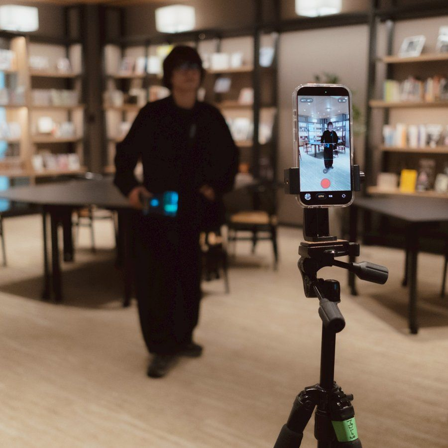
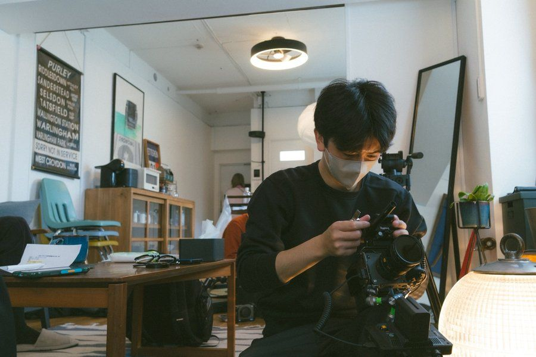
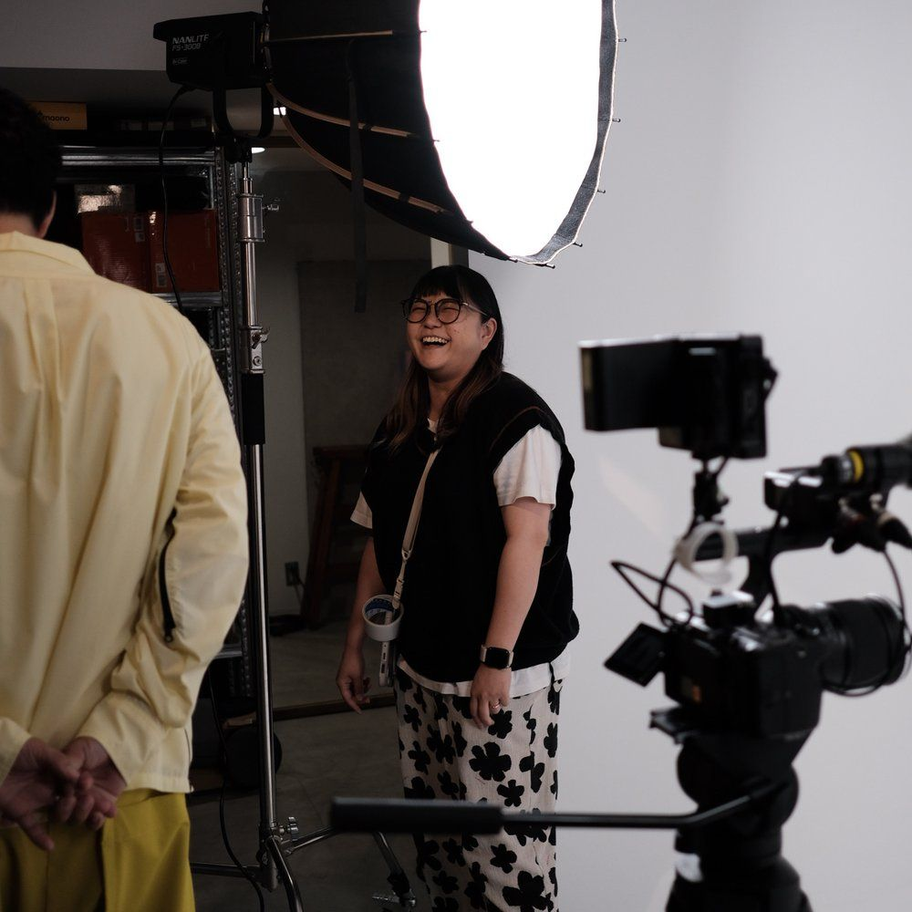

Who We Are
発注先ではなく、
発注先ではなく、
担当者。
外注は納品したら終わり。でも、映像もSNSもつくった後が本番です。だからM2Logは担当者として会議に出て、一緒に考え、届けるところまで動きます。
「チームが増えたみたい」と
言ってもらえることが、一番うれしい。
代表取締役 中村陵介
Video Marketing Partner
BOVA 13th — Sponsor Award Winner
映像をつくる前に、チームに入る。
つくるだけでなく、誰にどう届くかまで設計する。
チームの一員として伴走する、
映像マーケティングパートナーです。
Works With
いい動画をつくる。そこまでは、私たちの当たり前です。
本番は公開したあと——再生されるか、届くか、動いてもらえるか。
そこまで設計して、はじめて「つくった」と言えると考えています。

01 — SNS Management
TikTokアカウント運用代行
担当者としてチームに入り、企画・撮影から月次の数字改善まで回します。

02 — Short Video / Drama
ショート動画・ショートドラマ制作
冒頭2秒のフックから、最後まで見てしまう構成を設計します。

03 — Video Marketing
映像マーケティング支援
広告・採用・ブランディング。映像を「どう使うか」から設計します。
すべて内製（企画・脚本・撮影・編集）。外部委託を挟まないから、意図がズレず、修正も速い。
大手からローカルまで。認知・広告・採用・売上の4方向で。
認知
0→100万人
YouTube登録者（2年）
大手玩具メーカーのYouTube。Shorts主体の認知設計で、2年で登録者100万人へ。
広告
業界目安の約1/10
TikTok広告のクリック単価
1クリック11円（業界目安は80〜150円）。放送局系スポーツメディアの広告運用で。
採用
半年で40件
採用の一次問い合わせ
インフラ関連企業の採用TikTok。応募につながる最初の接点を、半年で40件。
売上
週5〜10件
広告動画1本で問い合わせ
大阪の理容室。1本の広告動画から、問い合わせが2〜3週間続きました。
※数値は運用実績の一例です。投稿後1週間時点の計測を含みます。
受賞作から、日々の現場まで。
許諾をいただけたものから、順次掲載しています。
外注は納品したら終わり。でも、映像もSNSもつくった後が本番です。だからM2Logは担当者として会議に出て、一緒に考え、届けるところまで動きます。
「チームが増えたみたい」と
言ってもらえることが、一番うれしい。
代表取締役 中村陵介
Step 0
無料相談
契約前
まず話して、課題を整理します。ご依頼の方向が見えてきたら、ご提案の際にコンセプトとKPIの考え方までお持ちします。設計は、契約の前から始まっています。
Step 1
キックオフ & インプット
Week 1–2
契約後すぐに始動。会社を知るところから。資料をもらい、話を聞き、現場にも足を運びます。企画の精度は、ここで決まります。
Step 2
企画 & 撮影
Week 2–3
設計に沿って企画を固め、撮影へ。企画・脚本・撮影・編集まで、同じチームが担当します。
Step 3
初稿 → 公開
Week 4–
撮影から約10日で初稿をお送りします。チェックを経て、契約から1ヶ月前後で最初の動画が世に出ます。
公開後は、月1回〜の定例に代表が直接参加。月次レポートと改善提案を重ね、翌月の企画に反映します。
1本だけでも、まるごとでも。どちらの入口からでも、同じチームが動きます。
Production — 1本からOK
WebCM、ブランドムービー、採用動画、ショート動画。単発のご依頼も、企画から入って納品まで運びます。
企画・撮影・編集込み。見積りは無償。実績は1本10万円のシンプル制作から、数百万円規模の広告クリエイティブ開発まで。
制作について見るPartnership — 継続
担当者としてチームに入り、企画・撮影・編集・投稿・分析まで。月5本〜のコンテンツで、アカウントを育てます。
内容・本数・体制によって形が変わるため、詳細はご相談時に「この予算で何ができるか」を率直にお伝えします。内製化を目指す12ヶ月プランもあります。お見積りは無償です。
プランを見る目安として、単発のショート動画は1本10万円〜、継続のSNS運用は月30万円台〜です。内容・本数で変わるため、ご相談時に「この予算で何ができるか」を率直にお伝えします。お見積りは無償です。
可能です。実際、ほとんどのご相談がその状態から始まります。ご依頼の方向が見えてきたら、ご提案の際にコンセプトとKPIの考え方までお持ちするので、比較検討の材料としてもお使いいただけます。
「映像制作」と「SNS運用」を同じチームで内製していること。そして、担当者として会議に出て、届くまで動き続けることです。定例には代表が直接参加します。